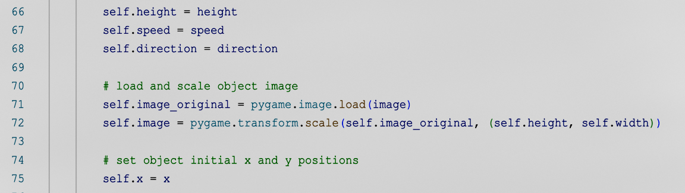

Pong
Management simple movement and simple collision detection
Everyone needs a side project. Building small games is mine. Reach out if you're interested in connecting.
Join in the fun by selecting a retro game clone and getting started for yourself.

Management simple movement and simple collision detection

Explore more complex object collision detection management